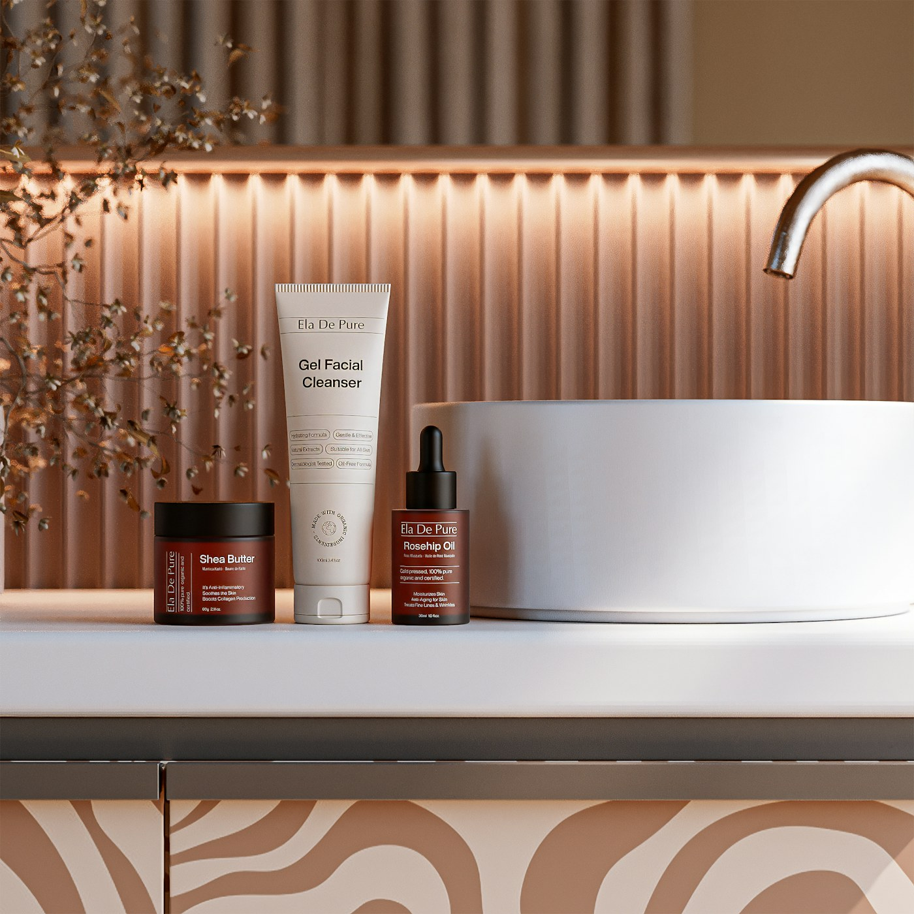
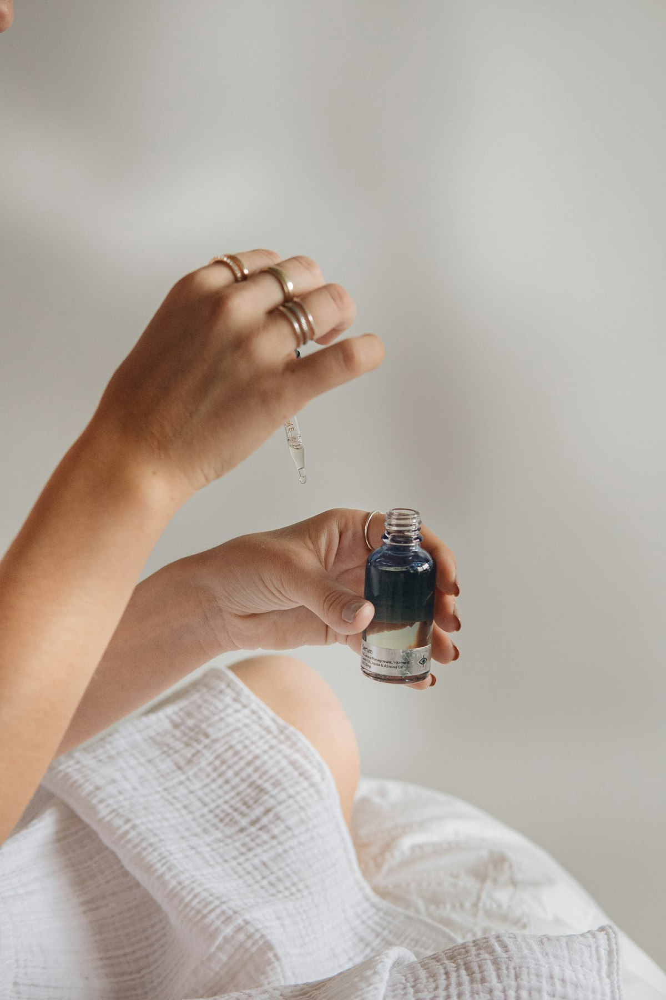
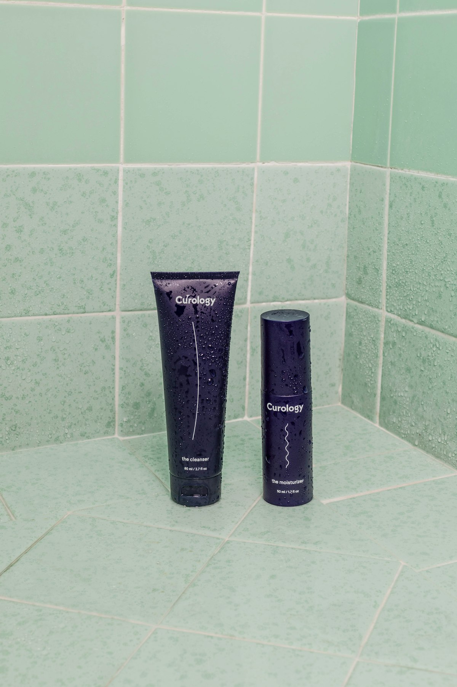

The daily skin journal · Issue 02Less noise.
Less noise.
More ritual.
A tactile edit of gentle cleansing, useful hydration and everyday protection—chosen around the life you already live.

Featured collection · Hydration
Weightless layers for skin that feels thirsty.
Begin with a water-binding serum, add a cream that suits your preferred finish, and keep the morning complete with sunscreen.
This edit is organized by role rather than promises, so every product has a clear place in the sequence.
Your rhythm
Morning light or evening reset?
Switch the routine to see a focused four-step sequence.

07:30 · Morning
Start light. Finish protected.
Hydrate in comfortable layers, then give sunscreen the final word.
Your two-minute edit
Let the routine meet you.
Five observations. One practical place to begin.
Skin type discovery
Choose a familiar pattern.
Skin can change with weather, routines and context. Use this as a starting point.
The journal shelf
See the full collectionFour alternative favourites
Editorial sets
Compare all bundlesRoutines, already in conversation.
A considered next step
Bring us the routine you already use.
Share your daily patterns and preferred textures with our formulation team for personalized recommendations.